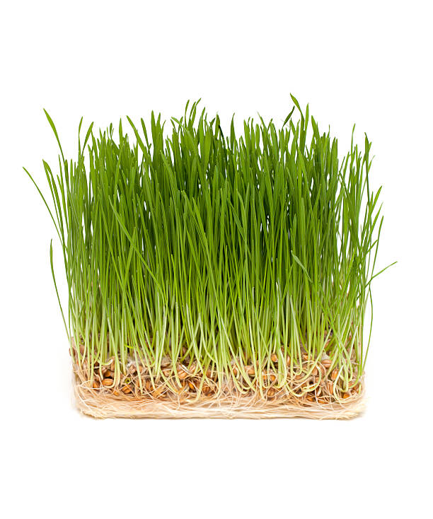
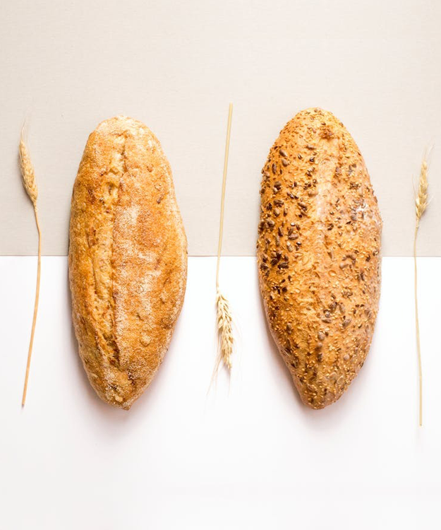
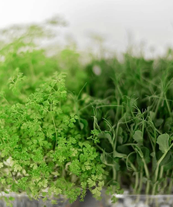
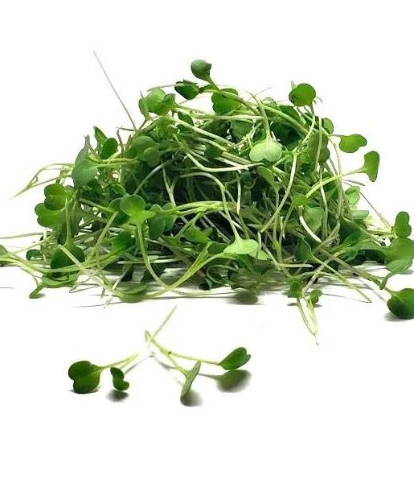

Pasto de Trigo
$135.00 mxn .650g / 90 charolas en Stock.
Bolillo
$14.00 mxn .250g / Stock: 30pz.
Microgreens Girasol

$154.00 .100g / Stock: 10pz.
Microgreens Chicharo
$154.00 .100g / Stock: 10pz.
Microgreens Apio y Chicharo
$154.00 .100g / Stock: 10pz.
Microgreens Arúgula

$154.00 .100g / Stock:10pz.
Despues de realizar tu orden por Whatsapp, adquiere tus productos "VERDECITOS" en cualquiera de los siguientes negocios asociados a la Red Comercial:
© 2023 Verdecitos Organic Sustainable Food.
All Rights Reserved.